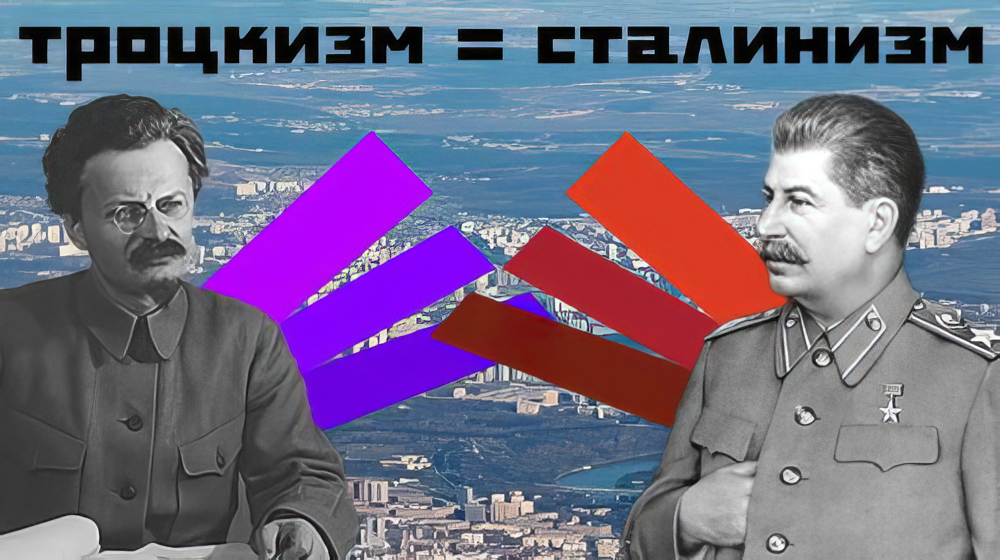

|
|
|
О троцкизме и сталинизме
(заметка)

|
• Что такое троцкизм?
Это оппортунистическое движение, без каких-либо чётких идеологических рамок, которые бы с этим словом были неразрывно связаны. Благодаря применению одобренной самим Троцким тактики энтризма, определить чёткие идеологические рамки троцкизма стало в принципе невозможно.
• Сущность троцкистского явления Троцкисты отстаивают интересы мелкой буржуазии, притворяясь при этом коммунистами, марксистами, революционерами. Их левый уклон — это проявление мелкобуружазной революционности под маской отстаивания интересов рабочих. Акции лево-уклонистов не могут привести рабочих к победе — и ни разу в истории ещё не приводили! Не видел мир ни одной успешной троцкистской революции. Да и троцкисты их не начинают. Они просто проповедуют то, что перед революцией, якобы, нужно просто ждать, пока много стран сразу к ней будут готовы (спойлер: при троцкистах — никогда). А левый уклон троцкисты практически реализуют только в условии победы тех или иных других сил, чтобы саботировать их достижения. • Кто такие «левые»? Раз уж мы заговорили о левом повороте, то стоит и этот момент разъяснить. Левые — это буквы, не имеющие материального смысла. Политики отстаивающие интересы мелкой буржуазии таким образом метят территорию. Они и не сознательный пролетариат называют себя обычно «правыми», «левыми», «верхними», «нижними», и т.п. Коммунисты не имеют никакого отношения к «левым» • Что такое «сталинизм»? Так называемых «сталинистов» не существует. Мало того, что это название само преимущественно используется троцкистами (сподвижники реального Сталина себя так не назвали). По сути, троцкисты просто между собой заведомо договариваются, «я буду за Троцкого против Сталина, ты наоборот». И идут на показ конфликтовать, привлекая к себе внимание. • Разница с логической точки зрения Понятия «троцкизм» и «сталинизм» имеют больше общих признаков, чем существенных (и те не являются существенными в полном смысле этого слова). Если существенный признак отсутствует, то предмет перестаёт быть данным предметом. Следовательно, понятия «троцкизм» и «сталинизм» тождественны в своей сути и применении.
|
|
Красный Ёж |
Статьи: | Мы в соцсетях
|